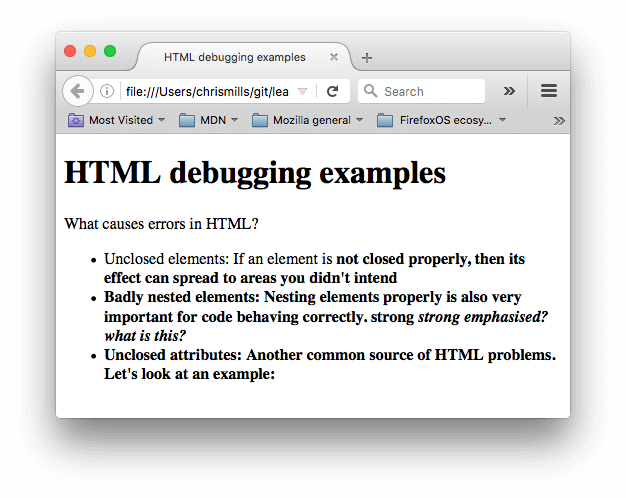

Активное обучение: Знакомство с толерантным кодом
Время изучить природу толерантного кода в HTML.
- Для начала, скачайте наш пример отладки и сохраните локально. Эта демонстрация намеренно написана с ошибками, которые нам предстоит обнаружить.
- Далее, откройте её в браузере. Вы увидите нечто вроде этого: 
- Сейчас документ выглядит не особо хорошо; Давайте посмотрим в код и выясним почему (Показано только тело документа):
- Рассмотрим проблемы:
- У параграфа и элемента списка не закрыты теги. На изображении выше видно, что разметка не пострадала, так как браузеру легко сделать вывод о том, где заканчивается один элемент и начинается другой.
- Первый
<strong>элемент также не имеет закрывающего тега. Это уже более проблематично, так как сложно сказать, где элемент должен заканчиваться. На деле, весь оставшийся текст был выделен жирным. - Следующая часть нарушает правила вложенности:
<strong>strong <em>strong emphasised?</strong> what is this?</em>. В этом случае код тоже сложно проинтерпретировать по причине, описанной выше. - В атрибуте
hrefотсутствует закрывающая двойная кавычка. Это послужило причиной крупной проблемы — ссылка не воспроизвелась вовсе. - Сейчас же посмотрим, как браузер сгенерировал собственную разметку, в противовес исходной разметке документа. Чтобы сделать это, воспользуемся инструментами разработчика. Если вы не знакомы с инструментами разработчика, потратьте несколько минут на Обзор инструментов разработки в браузерах.
- В DOM инспекторе вы можете увидеть как сгенерировалась новая разметка:
- Используя DOM инспектор, давайте рассмотрим детали нашего кода, чтобы увидеть, как браузер пытается исправить наши ошибки в HTML (мы обозреваем в Firefox; другой современный браузер должен выдать те же результаты):
- Параграфы и элементы списка получены с закрывающими тегами.
- Было неочевидно, где элемент
<strong>должен был закрыться, так что браузер обернул каждый отдельный блок текста своими собственными тегами strong, причём до самого низа документа! - Некорректная вложенность была исправлена браузером следующим образом:
- Ссылка с отсутствующими двойными кавычками была удалена насовсем. Последний элемент списка будет выглядеть так:
<h1>HTML debugging examples</h1>
<p>What causes errors in HTML?
<ul>
<li>Unclosed elements: If an element is <strong>not closed properly,
then its effect can spread to areas you didn't intend
<li>Badly nested elements: Nesting elements properly is also very important
for code behaving correctly. <strong>strong <em>strong emphasised?</strong>
what is this?</em>
<li>Unclosed attributes: Another common source of HTML problems. Let's
look at an example: <a href="https://www.mozilla.org/>link to Mozilla
homepage</a>
</ul>
<strong>strong
<em>strong emphasised?</em>
</strong>
<em> what is this?</em><li>
<strong>Unclosed attributes: Another common source of HTML problems.
Let's look at an example: </strong>
</li>